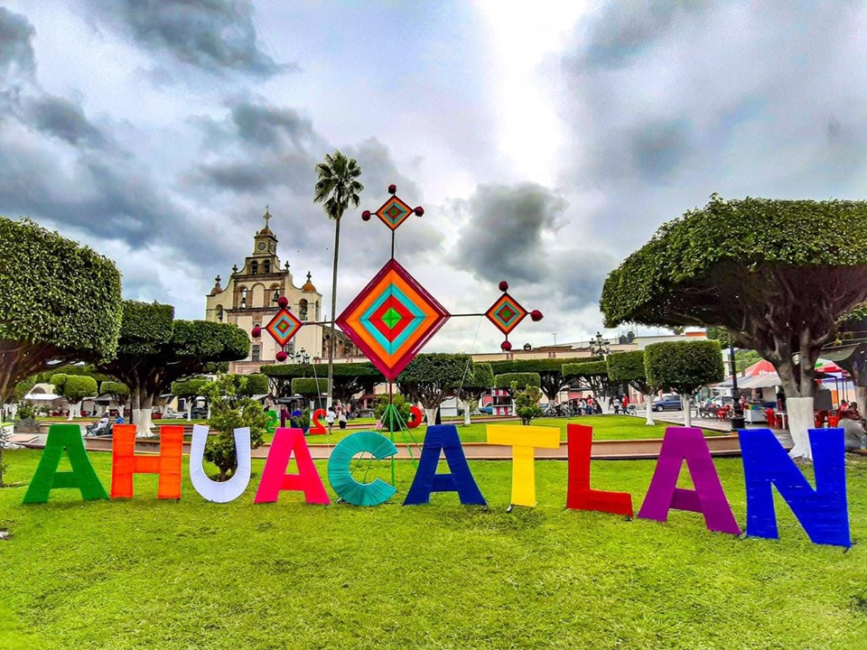
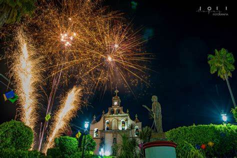

¿Dónde está ubicado?
Ahuacatlán es un municipio ubicado en la región norte de Nayarit, México. Limita al norte con el municipio de Jala, al este con el municipio de Ixtlán del Río, al sur con el municipio de Tepic, y al oeste con el municipio de Jalisco.
Fiestas Tradicionales
Entre las festividades más importantes de Ahuacatlán están las celebraciones en honor a San Felipe Neri, que se celebran el 26 de mayo con música, danzas y eventos religiosos. También es tradicional la fiesta en honor a la Virgen de Guadalupe en diciembre.
¿Qué produce?
En Ahuacatlán la economía está basada principalmente en la agricultura, destacando la producción de maíz, caña de azúcar y café. También es una zona ganadera, con la cría de ganado vacuno y caballar.